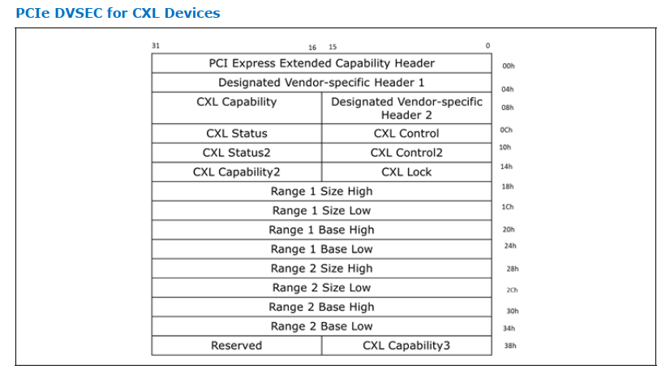
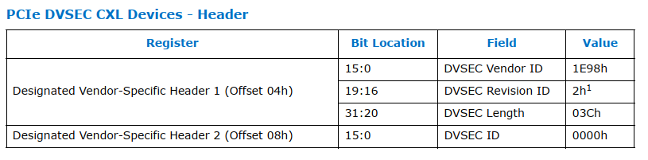
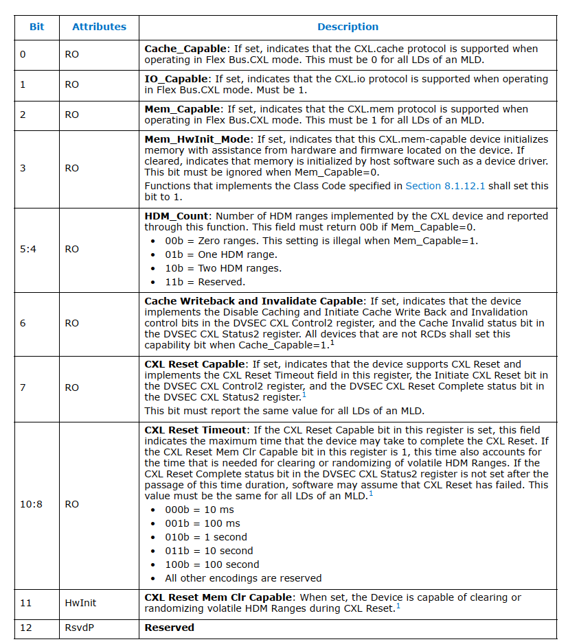
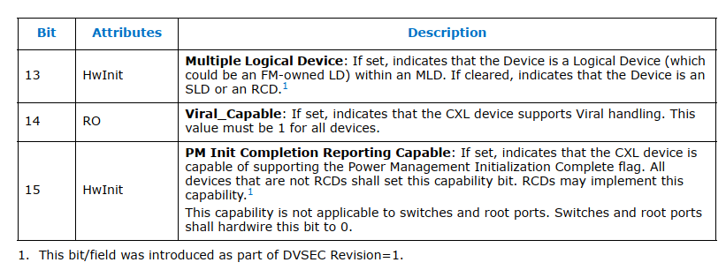
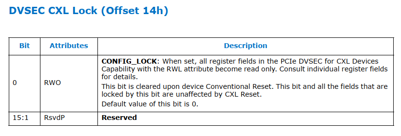
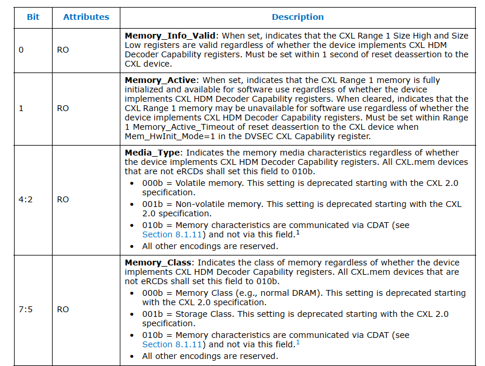
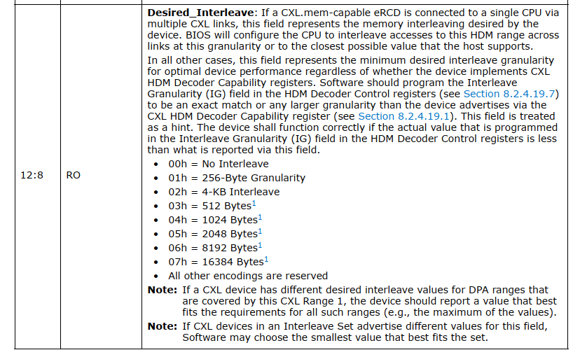
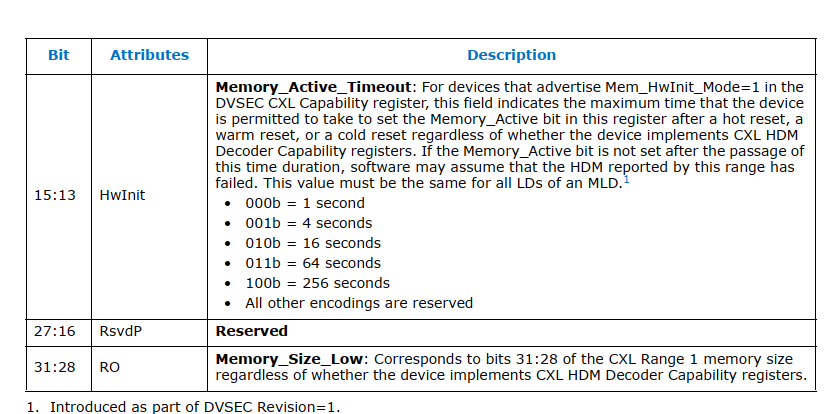

CXL DVSEC
[toc]
Overview
一共有9个DVSEC

DVSEC 0 - PCIe DVSEC for CXL Devices
PCIe DVSEC for CXL Devices


Cap

从上图可以看到前三个bit分别表示cxl 的cache、 io、mem这三个协议使能状态，cxl.io default是必须要使能的。
bit3和bits[5:4]都是跟cxl.mem相关。有几个HDM range。下面就有两个range的寄存器。
bit 6 主要跟cache writeback和invalidate 能力有关，在cxl.cache 使能的情况下这个必须是要设置上的。bit7，bits[10:8] ,bit 11都跟设备 Reset有关联。
CXL Loock

Range Register
接下来我们看一下图1中的range register的作用。如果cxl.mem 使能且HDM_COUNT 等于1的话则range 1 register必须要初始化，如果HDM_COUNT 等于2的话则range 2 register 也必须要初始化。每个range register都包含4个子的register分别是Size High, Size Low, Base Higth, Base Low。
Range 1 Size Low 有很多属性寄存器，其他range size high 和 base寄存器没有太多额外的属性信息。
固件读取size，写入base。

bit 0 如果设置上则表示 range 1 Size high and Size low register是有效的
bit 1则表示hdm是否可用如果被设置上则表示cxl hdm已经初始化完成处于可用状态
bits 4:2 则表示hdm底层所使用的存储介质类型
bits 7:5则表示 hdm的使用类型是作为普通内存去使用还是作为storage去使用

bits[12:8] 主要是memory interleave也称为内存交织相关的一些配置， 内存交织技术主要是通过同时并行访问dram的多个bank来提升内存访问性能。上面的配置主要涉及到interleave的粒度相关。

bits 15:13 表示的是memory active的timeout，这个timeout是由硬件来设置的。
bits 31:28 表示的是memory size的 31:28位